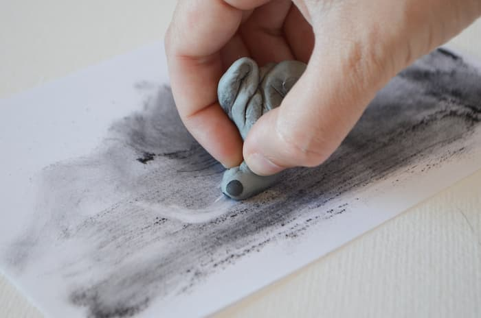

Técnicas y Materiales Artísticos
Objetivos
- Dibujo: lápiz, carbón, tinta.
Contenido:
El dibujo es una forma de expresión artística que se ha utilizado desde tiempos prehistóricos y ha evolucionado a lo largo de los siglos. Es una disciplina fundamental en el arte visual, ya que permite a los artistas plasmar sus ideas y emociones en una superficie bidimensional. Dentro del dibujo, se utilizan diferentes materiales y técnicas que influyen en el resultado final. Entre los materiales más comunes se encuentran el lápiz, el carbón y la tinta. A continuación, se explora cada uno de estos materiales en detalle.
Lápiz
Características del lápiz
El lápiz es uno de los materiales de dibujo más versátiles y accesibles. Está compuesto por una mina de grafito encerrada en un cilindro de madera. La dureza del grafito varía, y se clasifica en una escala que va desde el más duro (H) hasta el más blando (B). Los lápices más duros producen líneas más finas y claras, mientras que los más blandos permiten obtener trazos más oscuros y suaves.
Técnicas con lápiz
El lápiz permite una gran variedad de técnicas, como el sombreado, el difuminado y el rayado. Los artistas pueden crear una amplia gama de tonalidades y texturas utilizando diferentes grados de presión y ángulos de trazado. Además, el lápiz es fácil de borrar, lo que facilita la corrección de errores y la experimentación.
Aplicaciones del lápiz
El lápiz es ideal para bocetos y estudios preliminares, ya que permite realizar trazos rápidos y precisos. También es ampliamente utilizado en ilustraciones detalladas, retratos y dibujos técnicos. Su versatilidad lo convierte en una herramienta esencial en el kit de cualquier artista.
Carbon
Características del carbón
El carbón es un material de dibujo que se obtiene quemando madera hasta que se convierte en un residuo negro y quebradizo. Viene en diferentes formas, como palillos, barras y lápices de carbón comprimido. El carbón es conocido por su capacidad para producir líneas intensamente negras y su facilidad para crear efectos de sombra y profundidad.
Técnicas con carbón
 El carbón se puede utilizar para crear trazos audaces y dramáticos, así como para lograr suaves gradaciones tonales. Una técnica común es el difuminado, que consiste en esparcir el polvo de carbón con los dedos, un difumino o un trapo para obtener transiciones suaves entre luces y sombras. Además, el carbón permite crear líneas y contornos fuertes, lo que lo hace ideal para dibujos expresivos y gestuales.
Aplicaciones del carbón
El carbón se utiliza a menudo en dibujos de gran tamaño y en trabajos que requieren un fuerte contraste y una rica variedad de tonos. Es común en estudios de figura humana, paisajes y obras expresionistas. Debido a su naturaleza sucia y propensa a manchar, muchos artistas fijan sus dibujos de carbón con un fijador para evitar que se borren o se deterioren con el tiempo
Tinta
Características de la tinta
La tinta es un material líquido que se utiliza para dibujar con plumas, pinceles o estilógrafos. Viene en una variedad de colores, aunque el negro es el más común. La tinta puede ser a base de agua o de aceite, y algunas son permanentes mientras que otras son solubles en agua.
Técnicas con tinta
Dibujar con tinta requiere precisión y control, ya que los errores son difíciles de corregir. Sin embargo, permite una gran variedad de efectos y estilos, desde líneas finas y detalladas hasta manchas y lavados de tinta diluida. Las técnicas más comunes incluyen el punteado, el rayado cruzado y el uso de pincel para lavados y efectos de sombreado.
Aplicaciones de la tinta
La tinta es ampliamente utilizada en ilustraciones, cómics, caligrafía y diseños gráficos. Su capacidad para crear líneas nítidas y contrastes fuertes la hace ideal para trabajos detallados y estilizados. Además, los lavados de tinta permiten a los artistas añadir profundidad y dimensión a sus dibujos.
Conclusión
El dibujo con lápiz, carbón y tinta ofrece a los artistas una amplia gama de posibilidades creativas. Cada material tiene sus propias características y técnicas, lo que permite explorar diferentes estilos y efectos en el arte del dibujo. La elección del material depende del propósito del dibujo, el estilo del artista y el efecto deseado. En conjunto, estos materiales enriquecen el lenguaje visual y permiten a los artistas expresar sus ideas de manera única y poderosa.